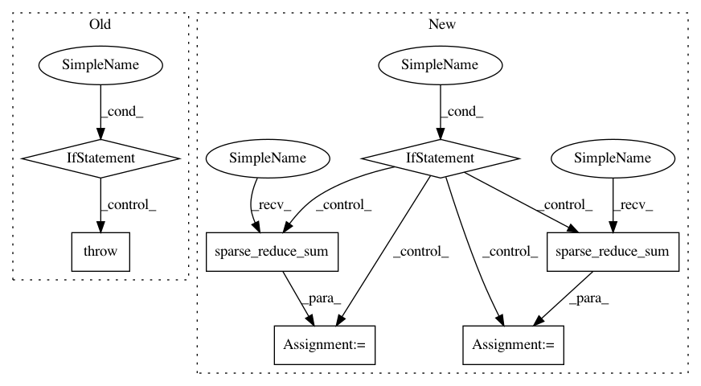

30146171032ed79ec99ff002ef8f7065c70d8536,tensorflow_transform/analyzers.py,,mean,#Any#Any#Any#Any#,449
Before Change
if output_dtype is None:
raise TypeError("Tensor type %r is not supported" % x.dtype)
sum_dtype, sum_fn = _sum_combine_fn_and_dtype(x.dtype)
if isinstance(x, tf.SparseTensor):
if not reduce_instance_dims:
raise TypeError(
"SparseTensor is only supported when reduce_instance_dims=True")
x = x.values
with tf.name_scope(name, "mean"):
// For now _numeric_combine will return a tuple with as many elements as the
// input tuple.
x_count, x_sum = _numeric_combine( // pylint: disable=unbalanced-tuple-unpacking
After Change
raise TypeError("Tensor type %r is not supported" % x.dtype)
sum_dtype, sum_fn = _sum_combine_fn_and_dtype(x.dtype)
with tf.name_scope(name, "mean"):
if isinstance(x, tf.SparseTensor):
if reduce_instance_dims:
ones_values, x_values = tf.ones_like(x.values), x.values
else:
sparse_ones = tf.SparseTensor(
indices=x.indices,
values=tf.ones_like(x.values),
dense_shape=x.dense_shape)
ones_values = tf.sparse_reduce_sum(sparse_ones, axis=0, keep_dims=True)
x = tf.cast(x, output_dtype)
ones_values = tf.cast(ones_values, output_dtype)
x_values = tf.sparse_reduce_sum(x, axis=0, keep_dims=True)
else:
ones_values, x_values = tf.ones_like(x), x
x_count, x_sum = _numeric_combine( // pylint: disable=unbalanced-tuple-unpacking
[ones_values, x_values],
sum_fn,
reduce_instance_dims,
In pattern: SUPERPATTERN
Frequency: 3
Non-data size: 7
Instances
Project Name: tensorflow/transform
Commit Name: 30146171032ed79ec99ff002ef8f7065c70d8536
Time: 2018-06-18
Author: tf-transform-dev@google.com
File Name: tensorflow_transform/analyzers.py
Class Name:
Method Name: mean
Project Name: tensorflow/transform
Commit Name: 30146171032ed79ec99ff002ef8f7065c70d8536
Time: 2018-06-18
Author: tf-transform-dev@google.com
File Name: tensorflow_transform/analyzers.py
Class Name:
Method Name: mean
Project Name: NifTK/NiftyNet
Commit Name: a6d07af248a7594b8dfedbf8368ddac3f901f3ec
Time: 2018-12-13
Author: z.eaton-rosen@ucl.ac.uk
File Name: niftynet/layer/loss_segmentation.py
Class Name:
Method Name: dice_plus_xent_loss
Project Name: NifTK/NiftyNet
Commit Name: 29d9f7d43b66da4c25686134ff0366f72934a728
Time: 2018-12-13
Author: z.eaton-rosen@ucl.ac.uk
File Name: niftynet/layer/loss_segmentation.py
Class Name:
Method Name: dice_plus_xent_loss